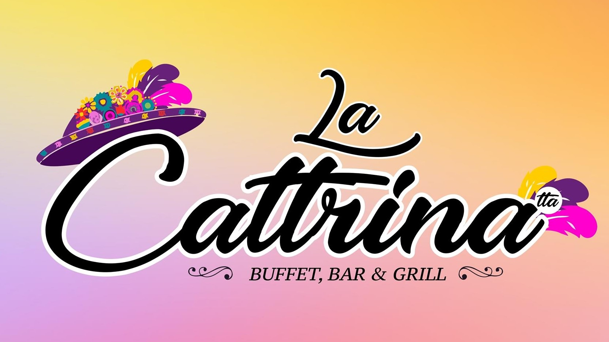

Experiece
Multimedia editor and audio design
Self Employee
• Controlled +5 video editing software to trim videos to match average attention span
• Created a library of sound and visual effects to leverage for +30 projects
• Sorted and edited 5+ hours of raw footage into 10 minutes of finished video per week
with 95% positive client feedback
September 2016 - Present
San Fernando, Tamaulipas
Mesil S.A. de C.V.
Internal Control Mananger
• Managed internal control for 300+ employees and 150+ products
• Collaborated with marketing area in 20+ internal projects
• Partnered with a team of 6 analysts to asses marketing and sales cost structure; facilitated supply chain logistics and payment
processing systems, saving 25% on division expenses
August 2021 - December 2021
Ciudad Victoria, Tamaulipas, Mexico
La Catrina Buffet Bar&Gril
General Employee
• Led In supply chain up for 1 year reducing significative time and costs
• Reviewed 5+ new product ideas for costumer menu and client service
• Designed aesthetics, advertising, menus, delivery and +10 details
June 2020 - July 2021
San Fernando, Tamaulipas, Mexico
Skills
• Obtain, interpret, and use knowledge, facts, and data for reasoning and analyzing
• Understand and respect individuals' differences
• Create, edit and communicate effective and clear memos, letters, and technical reports
• Negotiate and manage conflict
• Organize, prioritize, and delegate work
• Use existing digital technologies ethically and efficiently - to solve problems, complete tasks, and accomplish goals